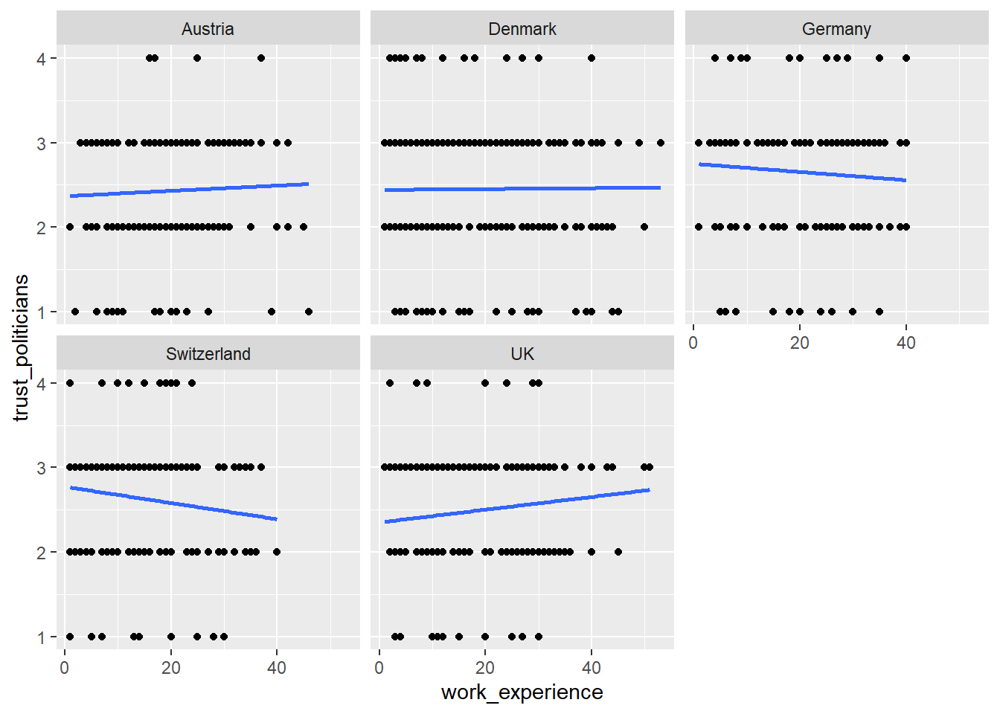
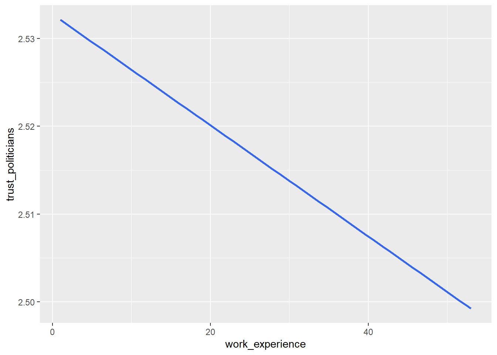
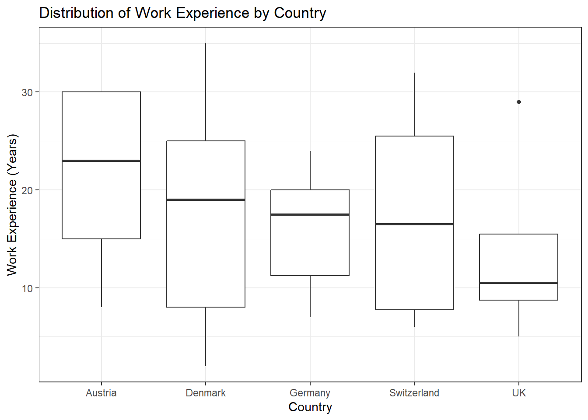
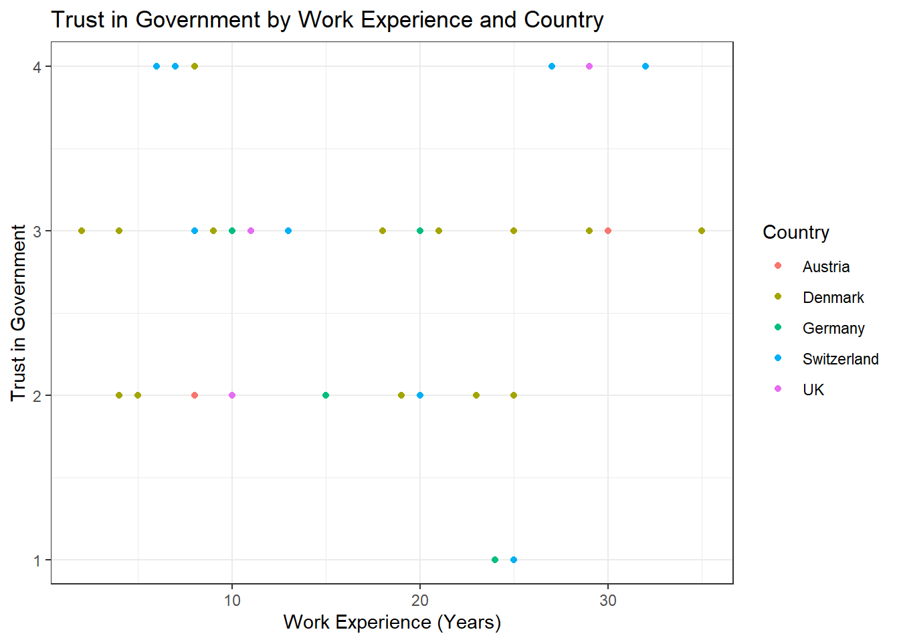
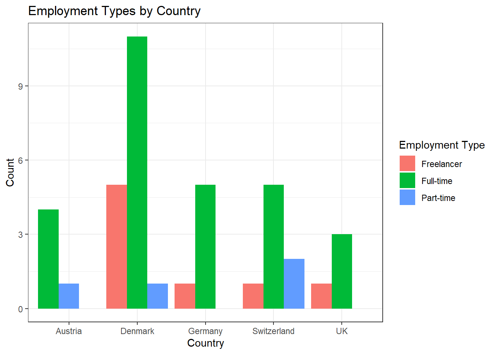
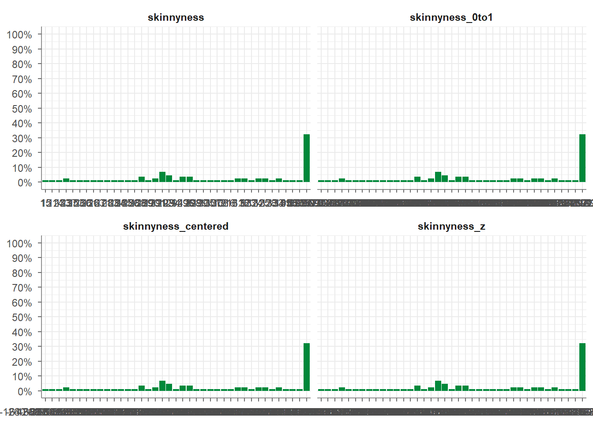
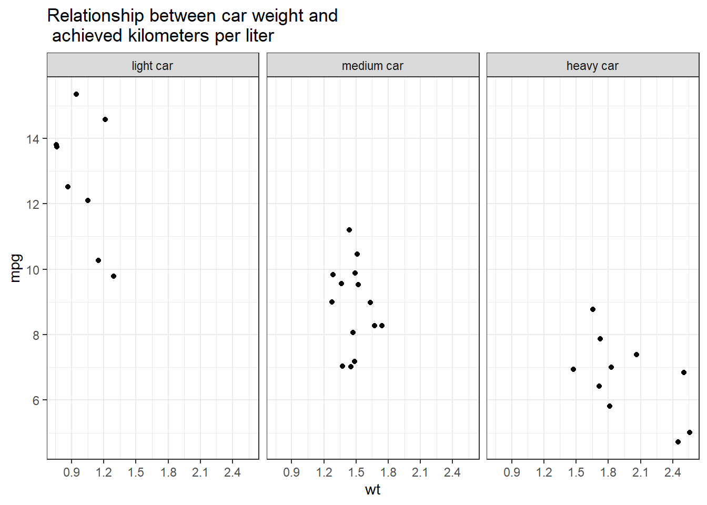
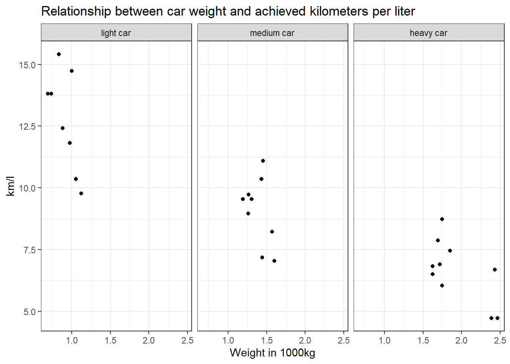
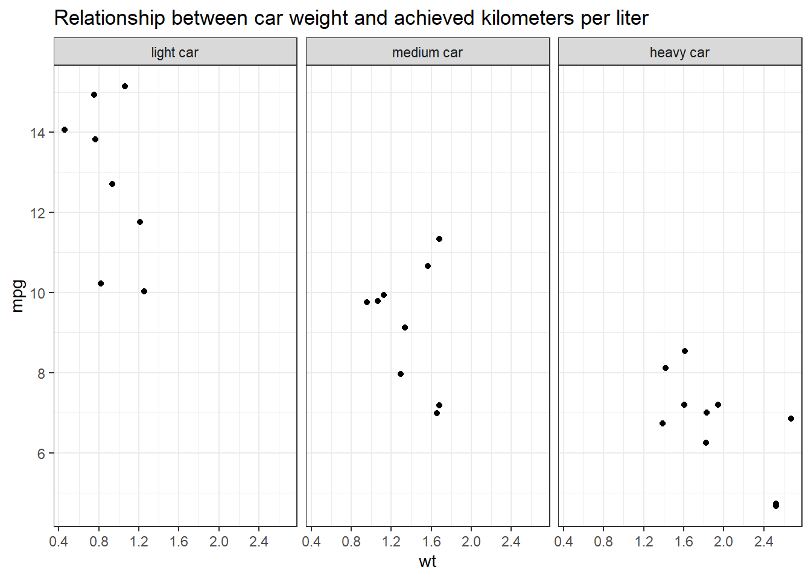

Solutions
This is where you’ll find solutions for all of the tutorials.
Solutions for Exercise 1
Task 1
Below you will see multiple choice questions. Please try to identify the correct answers. 1, 2, 3 and 4 correct answers are possible for each question.
1. What panels are part of RStudio?
Solution:
- source (x)
- console (x)
- packages, files & plots (x)
2. How do you activate R packages after you have installed them?
Solution:
- library() (x)
3. How do you create a vector in R with elements 1, 2, 3?
Solution:
- c(1,2,3) (x)
4. Imagine you have a vector called ‘vector’ with 10 numeric elements. How do you retrieve the 8th element?
Solution:
- vector[8] (x)
5. Imagine you have a vector called ‘hair’ with 5 elements: brown, black, red, blond, other. How do you retrieve the color ‘blond’?
Solution:
- hair[4] (x)
Task 2
Create a numeric vector with 8 values and assign the name age to the vector. First, display all elements of the vector. Then print only the 5th element. After that, display all elements except the 5th. Finally, display the elements at the positions 6 to 8.
Solution:
## [1] 65 52 73 71 80 62 68 87## [1] 80## [1] 65 52 73 71 62 68 87## [1] 62 68 87Task 3
Create a non-numeric, i.e. character, vector with 4 elements and assign the name eye_color to the vector. First, print all elements of this vector to the console. Then have only the value in the 2nd element displayed, then all values except the 2nd element. At the end, display the elements at the positions 2 to 4.
Solution:
## [1] "blue" "green" "brown" "grey"## [1] "green"## [1] "blue" "brown" "grey"## [1] "green" "brown" "grey"## [1] "green"## [1] "blue" "brown" "grey"## [1] "green" "brown" "grey"Solutions for Exercise 2
Task 1
Download the “WoJ_names.csv” from LRZ Sync & Share (click here) and put it into the folder that you want to use as working directory.
Set your working directory and load the data into R by saving it into a source object called data. Note: This time, it’s a csv that is separated by semicolons, not by commas.
Solution:
Task 2
Now, print only the column to the console that shows the trust in
government. Use the $ operator first. Then try to achieve the same
result using the subsetting operators, i.e. [].
Solution:
## [1] 3 4 4 4 2 4 1 3 1 3 2 3 2 2 2 2 3 3 4 3 3 2 3 4 3 3 3 2 3 3 3 3 4 2 3 2 2 2
## [39] 2 3## [1] 3 4 4 4 2 4 1 3 1 3 2 3 2 2 2 2 3 3 4 3 3 2 3 4 3 3 3 2 3 3 3 3 4 2 3 2 2 2
## [39] 2 3Solutions for Exercise 3
Task 1
Below you will see multiple choice questions. Please try to identify the correct answers. 1, 2, 3 and 4 correct answers are possible for each question.
1. What are the main characteristics of tidy data?
Solution:
- Every observation is a row. (x)
2. What are dplyr functions?
Solution:
mutate()(x)
3. How can you sort the eye_color of Star Wars characters from Z to A?
Solution:
starwars_data %>% arrange(desc(eye_color))(x)starwars_data %>% select(eye_color) %>% arrange(desc(eye_color))
4. Imagine you want to recode the height of the these characters. You want to have three categories from small and medium to tall. What is a valid approach?
Solution:
starwars_data %>% mutate(height = case_when(height<=150~"small",height<=190~"medium",height>190~"tall"))
5. Imagine you want to provide a systematic overview over all hair colors and what species wear these hair colors frequently (not accounting for the skewed sampling of species)? What is a valid approach?
Solution:
starwars_data %>% group_by(hair_color, species) %>% summarize(count = n()) %>% arrange(hair_color)
Task 2
It’s your turn now. Load the starwars data like this:
library(dplyr) # to activate the dplyr package
starwars_data <- starwars # to assign the pre-installed starwars data set (dplyr) into a source object in our environmentSolution:
How many humans are contained in the starwars dataset overall?
First, solve this task using filter() only.
## # A tibble: 35 × 14
## name height mass hair_color skin_color eye_color birth_year sex gender
## <chr> <int> <dbl> <chr> <chr> <chr> <dbl> <chr> <chr>
## 1 Luke Sk… 172 77 blond fair blue 19 male mascu…
## 2 Darth V… 202 136 none white yellow 41.9 male mascu…
## 3 Leia Or… 150 49 brown light brown 19 fema… femin…
## 4 Owen La… 178 120 brown, gr… light blue 52 male mascu…
## 5 Beru Wh… 165 75 brown light blue 47 fema… femin…
## 6 Biggs D… 183 84 black light brown 24 male mascu…
## 7 Obi-Wan… 182 77 auburn, w… fair blue-gray 57 male mascu…
## 8 Anakin … 188 84 blond fair blue 41.9 male mascu…
## 9 Wilhuff… 180 NA auburn, g… fair blue 64 male mascu…
## 10 Han Solo 180 80 brown fair brown 29 male mascu…
## # ℹ 25 more rows
## # ℹ 5 more variables: homeworld <chr>, species <chr>, films <list>,
## # vehicles <list>, starships <list>Next, solve it by combining filter() with summarize(count = n()).
## # A tibble: 1 × 1
## count
## <int>
## 1 35Finally, try to solve it with count().
## # A tibble: 3 × 2
## `species == "Human"` n
## <lgl> <int>
## 1 FALSE 48
## 2 TRUE 35
## 3 NA 4Task 3
Use mutate() and case_when() to create a new column height_group with:
- “short” if height < 140
- “medium” if height < 180
- “tall” otherwise.
Solution:
Task 4
How many humans are contained in starwars by height_group? (Hint: You’ll need to chain multiple functions. Remember that summarize() has a best friend that will help you solve this task. :))
Solution:
## # A tibble: 3 × 2
## height_group count
## <chr> <int>
## 1 medium 13
## 2 tall 17
## 3 <NA> 5Task 5
What is the most common height_group among Star Wars characters? (Hint: You’ll need to chain multiple functions, but one of them should be arrange())__
Solution:
## # A tibble: 4 × 2
## height_group count
## <chr> <int>
## 1 tall 44
## 2 medium 27
## 3 short 10
## 4 <NA> 6Alternatively, you could use the count() function:
## # A tibble: 4 × 2
## height_group n
## <chr> <int>
## 1 tall 44
## 2 medium 27
## 3 short 10
## 4 <NA> 6Task 6
What is the average mass of Star Wars characters that are not human and
have yellow eyes? (Hint: You’ll need to calculate descriptive statistics and remove all NAs.)
Solution:
starwars_data %>%
filter(species != "Human" & eye_color == "yellow") %>%
summarize(mean_mass = mean(mass, na.rm = TRUE))## # A tibble: 1 × 1
## mean_mass
## <dbl>
## 1 74.1Task 7
Compare the mean, median, and standard deviation of mass for all humans
and droids. (Hint: You’ll need to calculate descriptive statistics and remove all NAs.)
Solution:
starwars_data %>%
filter(species == "Human" | species == "Droid") %>%
group_by(species) %>%
summarize(
M = mean(mass, na.rm = TRUE),
Med = median(mass, na.rm = TRUE),
SD = sd(mass, na.rm = TRUE)
)## # A tibble: 2 × 4
## species M Med SD
## <chr> <dbl> <dbl> <dbl>
## 1 Droid 69.8 53.5 51.0
## 2 Human 81.3 79 19.3Task 8
Create a new variable in which you store the mass in gram. Add it to the dataframe.
Solution:
starwars_data <- starwars_data %>%
mutate(gr_mass = mass * 1000)
starwars_data %>%
select(name, species, mass, gr_mass)## # A tibble: 87 × 4
## name species mass gr_mass
## <chr> <chr> <dbl> <dbl>
## 1 Luke Skywalker Human 77 77000
## 2 C-3PO Droid 75 75000
## 3 R2-D2 Droid 32 32000
## 4 Darth Vader Human 136 136000
## 5 Leia Organa Human 49 49000
## 6 Owen Lars Human 120 120000
## 7 Beru Whitesun Lars Human 75 75000
## 8 R5-D4 Droid 32 32000
## 9 Biggs Darklighter Human 84 84000
## 10 Obi-Wan Kenobi Human 77 77000
## # ℹ 77 more rowsSolutions for Exercise 4
Task 1
Show how journalists’ work experience (work_experience) is associated
with their trust in politicians (trust_politicians). To do this,
create a very basic scatter plot using ggplot2 and the respective
ggplot() function. Use the aes() function inside ggplot() to map
variables to the visual properties. Use geom_point() to add points to
the plot.
Solution:

Task 2
Do more experienced journalists become less trusting in politicians? Add
this code to your plot to create a regression line:
+ geom_smooth(method = lm, se = FALSE).
What can you conclude from the regression line?
Solution:
WoJ %>%
ggplot(aes(x = work_experience, y = trust_politicians)) +
geom_point() +
geom_smooth(method = lm, se = FALSE)
The regression line shows us that there is no relationship between work experience and trust in politicians. In other words, more experienced journalists do not become less trusting in politicians.
Task 3
Does the relationship between work experience and trust in politicians remain stable across different countries? Alternatively, does work experience influence trust in politicians differently depending on the specific country context?
Try to create a visualization to answer this question using
facet_wrap().
Solution:
WoJ %>%
ggplot(aes(x = work_experience, y = trust_politicians)) +
geom_point() +
geom_smooth(method = lm, se = FALSE) +
facet_wrap(~country)
Task 4
In your current visualization, it may be challenging to discern cross-country differences. Let’s aim to create a visualization that illustrates these differences across countries more distinctly.
Remove the facet_wrap() and the geom_point() code line. This leaves
you with this graph:
WoJ %>%
ggplot(aes(x = work_experience, y = trust_politicians)) +
geom_smooth(method = lm, se = FALSE)
Now, display every country in a separate color by using the color
argument inside the aes() function.
Solution:
WoJ %>%
ggplot(aes(x = work_experience, y = trust_politicians, color = country)) +
geom_smooth(method = lm, se = FALSE)
Task 5
Add fitting labels to your plot. For example, set the main title to display: “Impact of Work Experience on Trust in Politicians”. The x-axis label should read “Years of Work Experience in Journalism”, and the y-axis label should read “Trust in Politicians on a 5-point Likert Scale”. The label for the color legend should be “Country”.
Solution:
WoJ %>%
ggplot(aes(x = work_experience, y = trust_politicians, color = country)) +
geom_smooth(method = lm, se = FALSE) +
labs(
title = "Impact of Work Experience on Trust in Politicians",
x = "Trust in Politicians on a 5-point Likert Scale",
y = "Years of Work Experience in Journalism",
color = "Country"
)
Task 6
Add a nice theme that you like, e.g. theme_minimal(),
theme_classic() or theme_bw().
Solution:
WoJ %>% ggplot(aes(x = work_experience, y = trust_politicians, color = country)) +
geom_smooth(method = lm, se = FALSE) +
labs(
title = "Impact of Work Experience on Trust in Politicians",
x = "Trust in Politicians on a 5-point Likert Scale",
y = "Years of Work Experience",
color = "Country"
) +
theme_bw()
Solutions for Exercise 5
# Note: you may need to set your working directory first
data <- read.csv2("WoJ_names.csv", header = TRUE)Task 1
Solution:
data %>%
ggplot(aes(x = country, y = work_experience)) +
geom_boxplot() +
theme_bw() +
labs(x = "Country", y = "Work Experience (Years)", title = "Distribution of Work Experience by Country")
Task 2
Solution:
data %>%
ggplot(aes(x = work_experience, y = trust_government, color = country)) +
geom_point() +
theme_bw() +
labs(x = "Work Experience (Years)", y = "Trust in Government", color = "Country", title = "Trust in Government by Work Experience and Country")
Task 3
Solution:
data %>%
ggplot(aes(x = work_experience, y = trust_government, color = country)) +
geom_point() +
geom_text(aes(label = name), check_overlap = TRUE, max.overlaps = Inf, hjust = 0, vjust = 0) +
theme_bw() +
labs(x = "Work Experience (Years)", y = "Trust in Government", color = "Country", title = "Trust in Government by Work Experience and Country")
Task 4
Solution:
data %>%
ggplot(aes(x = country, fill = employment)) +
geom_bar(position = "dodge") +
theme_bw() +
labs(x = "Country", y = "Count", fill = "Employment Type", title = "Employment Types by Country")
Alternative Solution: Those who prefer the width of the bars to be aligned can use this code:
data %>%
ggplot(aes(x = country, fill = employment)) +
geom_bar(position = position_dodge(preserve = "single")) +
theme_bw() +
labs(x = "Country", y = "Count", fill = "Employment Type", title = "Employment Types by Country")
Task 5
You can solve this exercise using two approaches. The first approach is to create a new variable called experience_level and save it in your original data set to be used for data visualization in the next, separate step:
Solution:
data <- data %>%
mutate(experience_level = case_when(
work_experience <= 10 ~ "Junior",
work_experience > 10 & work_experience <= 20 ~ "Mid-Level",
work_experience > 20 ~ "Senior"
))
data %>%
ggplot(aes(x = country, fill = employment)) +
geom_bar(position = "dodge") +
theme_bw() +
labs(x = "Country", y = "Count", fill = "Employment Type", title = "Employment Types by Country and Level of Experience") +
facet_wrap(~experience_level) +
theme(axis.text.x = element_text(angle = 45, hjust = 1))
The more elegant solution is to perform your data management in one go without saving the variable experience_level back into your original data set. Using this approach will help declutter your data because you won’t need to create and save a new variable that is only required for a single visualization:
data %>%
mutate(experience_level = case_when(
work_experience <= 10 ~ "Junior",
work_experience > 10 & work_experience <= 20 ~ "Mid-Level",
work_experience > 20 ~ "Senior"
)) %>%
ggplot(aes(x = country, fill = employment)) +
geom_bar(position = "dodge") +
theme_bw() +
labs(x = "Country", y = "Count", fill = "Employment Type", title = "Employment Types by Country and Level of Experience") +
facet_wrap(~experience_level) +
theme(axis.text.x = element_text(angle = 45, hjust = 1))
Solutions for Exercise 6
Task 1
How many characters are contained in the starwars_data that have no hair_color, i.e. hair_color that are equal to “none”?
Solve this task using tidycomm::tab_frequencies() and then keeping only the row that you are interested in by combining it with dplyr::filter().
Solution:
## # A tibble: 1 × 5
## hair_color n percent cum_n cum_percent
## <chr> <int> <dbl> <int> <dbl>
## 1 none 38 0.437 78 0.897Task 2
Replace all values of hair_color that are equal to “none” with NA, i.e., define them as missings. Remember to check the overwrite argument. :)
Solution:
Task 3
Reverse the variable mass, and call the new variable “skinnyness”. Reverse the variable height, and call the new variable “tinyness”.
Solution:
Task 4
Scale skinnyness to a new range from 0 to 1. The function should automatically create a variable called skinnyness_0to1. Display only the variables name, skinnyness, and skinnyness_0to1.
Solution:
starwars_data <- starwars_data %>%
minmax_scale(skinnyness,
change_to_min = 0,
change_to_max = 1)
starwars_data %>%
dplyr::select(name, skinnyness, skinnyness_0to1)## # A tibble: 87 × 3
## name skinnyness skinnyness_0to1
## <chr> <dbl> <dbl>
## 1 Luke Skywalker 1296 0.954
## 2 C-3PO 1298 0.955
## 3 R2-D2 1341 0.987
## 4 Darth Vader 1237 0.910
## 5 Leia Organa 1324 0.975
## 6 Owen Lars 1253 0.922
## 7 Beru Whitesun Lars 1298 0.955
## 8 R5-D4 1341 0.987
## 9 Biggs Darklighter 1289 0.949
## 10 Obi-Wan Kenobi 1296 0.954
## # ℹ 77 more rowsTask 5
Create two new variables: skinnyness_centered with center_scale() and skinnyness_z with z_scale().
Display all the variables name, skinnyness, skinnyness_0to1, skinnyness_centered, skinnyness_z.
Solution:
starwars_data <- starwars_data %>%
center_scale(skinnyness) %>%
z_scale(skinnyness)
starwars_data %>%
dplyr::select(name, skinnyness, skinnyness_0to1, skinnyness_centered, skinnyness_z)## # A tibble: 87 × 5
## name skinnyness skinnyness_0to1 skinnyness_centered skinnyness_z
## <chr> <dbl> <dbl> <dbl> <dbl>
## 1 Luke Skywalker 1296 0.954 20.3 0.120
## 2 C-3PO 1298 0.955 22.3 0.132
## 3 R2-D2 1341 0.987 65.3 0.385
## 4 Darth Vader 1237 0.910 -38.7 -0.228
## 5 Leia Organa 1324 0.975 48.3 0.285
## 6 Owen Lars 1253 0.922 -22.7 -0.134
## 7 Beru Whitesun La… 1298 0.955 22.3 0.132
## 8 R5-D4 1341 0.987 65.3 0.385
## 9 Biggs Darklighter 1289 0.949 13.3 0.0786
## 10 Obi-Wan Kenobi 1296 0.954 20.3 0.120
## # ℹ 77 more rowsTask 6
Visualize the variables skinnyness, skinnyness_0to1, skinnyness_centered, skinnyness_z using tidycomm::tab_frequencies) and tidycomm::visualize().
Solution:
starwars_data %>%
tab_frequencies(skinnyness, skinnyness_0to1, skinnyness_centered, skinnyness_z) %>%
visualize()
Task 7
Categorize skinnyness into three groups:
- “Heavy” for values ≤ 1200
- “Slim” for values > 1200 and ≤ 1300
- “Skinny” for values > 1300
Use tidycomm::categorize_scale(). The function should automatically create a variable called skinnyness_cat. Display the variables name, skinnyness, and skinnyness_cat.
Solution:
starwars_data <- starwars_data %>%
categorize_scale(skinnyness,
lower_end = 0,
upper_end = 1400,
breaks = c(1200, 1300),
labels = c("Heavy", "Slim", "Skinny"))
starwars_data %>%
dplyr::select(name, skinnyness, skinnyness_cat)## # A tibble: 87 × 3
## name skinnyness skinnyness_cat
## <chr> <dbl> <fct>
## 1 Luke Skywalker 1296 Slim
## 2 C-3PO 1298 Slim
## 3 R2-D2 1341 Skinny
## 4 Darth Vader 1237 Slim
## 5 Leia Organa 1324 Skinny
## 6 Owen Lars 1253 Slim
## 7 Beru Whitesun Lars 1298 Slim
## 8 R5-D4 1341 Skinny
## 9 Biggs Darklighter 1289 Slim
## 10 Obi-Wan Kenobi 1296 Slim
## # ℹ 77 more rowsTask 8
Use tidycomm::recode_cat_scale() to recode skinnyness_cat like this:
"Heavy"→"high_mass"
"Slim"→"medium_mass"
"Skinny"→"low_mass"
Do not overwrite the original variable. Instead, let recode_cat_scale() create a new variable automatically.
Display the variables name, skinnyness, skinnyness_cat, and the recoded variable.
Solution:
starwars_data <- starwars_data %>%
recode_cat_scale(skinnyness_cat,
assign = c("Heavy" = "high_mass",
"Slim" = "medium_mass",
"Skinny" = "low_mass"),
overwrite = FALSE)
starwars_data %>%
dplyr::select(name, skinnyness, skinnyness_cat, skinnyness_cat_rec)## # A tibble: 87 × 4
## name skinnyness skinnyness_cat skinnyness_cat_rec
## <chr> <dbl> <fct> <fct>
## 1 Luke Skywalker 1296 Slim medium_mass
## 2 C-3PO 1298 Slim medium_mass
## 3 R2-D2 1341 Skinny low_mass
## 4 Darth Vader 1237 Slim medium_mass
## 5 Leia Organa 1324 Skinny low_mass
## 6 Owen Lars 1253 Slim medium_mass
## 7 Beru Whitesun Lars 1298 Slim medium_mass
## 8 R5-D4 1341 Skinny low_mass
## 9 Biggs Darklighter 1289 Slim medium_mass
## 10 Obi-Wan Kenobi 1296 Slim medium_mass
## # ℹ 77 more rowsTask 9
Create a mean index called smallness_index using the variables skinnyness and tinyness. Then display only the mean index and the original variables that were used to create it.
Solution:
starwars_data <- starwars_data %>%
add_index(smallness_index,
skinnyness,
tinyness)
starwars_data %>%
dplyr::select(smallness_index,
skinnyness,
tinyness)## # A tibble: 87 × 3
## smallness_index skinnyness tinyness
## <dbl> <dbl> <dbl>
## 1 727 1296 158
## 2 730. 1298 163
## 3 788. 1341 234
## 4 682. 1237 128
## 5 752 1324 180
## 6 702. 1253 152
## 7 732. 1298 165
## 8 787 1341 233
## 9 718 1289 147
## 10 722 1296 148
## # ℹ 77 more rowsTask 10
Now create a sum index with the same variables and call it smallness_sum_index. Then display only the mean AND sum index and the original variables that were used to create it.
Solution:
starwars_data <- starwars_data %>%
add_index(smallness_sum_index,
skinnyness,
tinyness,
type = "sum")
starwars_data %>%
dplyr::select(smallness_index,
smallness_sum_index,
skinnyness,
tinyness)## # A tibble: 87 × 4
## smallness_index smallness_sum_index skinnyness tinyness
## <dbl> <dbl> <dbl> <dbl>
## 1 727 1454 1296 158
## 2 730. 1461 1298 163
## 3 788. 1575 1341 234
## 4 682. 1365 1237 128
## 5 752 1504 1324 180
## 6 702. 1405 1253 152
## 7 732. 1463 1298 165
## 8 787 1574 1341 233
## 9 718 1436 1289 147
## 10 722 1444 1296 148
## # ℹ 77 more rowsSolutions for Exercise 7
Task 1
Check the data set for missing values (NAs) and delete all observations that have missing values.
Solution:
You can solve this by excluding NAs in every single column:
library(dplyr)
data <- as_tibble(mtcars)
# we'll now only keep observations that are NOT NAs in the following variables (remember that & = AND)
data <- data %>%
filter(!is.na(mpg) &
!is.na(cyl) &
!is.na(disp) &
!is.na(hp) &
!is.na(drat) &
!is.na(wt) &
!is.na(qsec) &
!is.na(vs) &
!is.na(am) &
!is.na(gear) &
!is.na(carb))Alternatively, excluding NAs from the entire data set works, too, but
you have not learned the drop_na()function in the tutorials:
Task 2
Let’s transform the weight wt of the cars. Currently, it’s given as Weight in 1000 lbs. I guess you are not used to lbs, so try to mutate wt to represent Weight in 1000 kg. 1000 lbs = 453.59 kg, so we will need to divide by 2.20.
Similarly, I think that you are not very familiar with the unit Miles per gallon of the mpg variable. Let’s transform it into Kilometer per liter. 1 m/g = 0.425144 km/l, so again divide by 2.20.
Solution:
Task 3
Now we want to group the weight of the cars in three categories: light, medium, heavy. But how to define light, medium, and heavy cars, i.e., at what kg should you put the threshold? A reasonable approach is to use quantiles (see Tutorial: summarize() [+ group_by()]). Quantiles divide data. For example, the 75% quantile states that exactly 75% of the data values are equal or below the quantile value. The rest of the values are equal or above it.
Use the lower quantile (0.25) and the upper quantile (0.75) to estimate two values that divide the weight of the cars in three groups. What are these values?
Solution:
You can use dplyrfor this job:
## # A tibble: 1 × 2
## LQ_wt UQ_wt
## <dbl> <dbl>
## 1 1.17 1.64Or you can use the tidycomm package:
## # A tibble: 1 × 3
## Variable p25 p75
## * <chr> <dbl> <dbl>
## 1 wt 1.17 1.6475% of all cars weigh 1.622727* 1000kg or less and 25% of all cars weigh 1.190909* 1000kg or less.
Task 4
Use the values from Task 3 to create a new variable wt_cat that divides the cars in three groups: light, medium, and heavy cars.
Solution:
data <- data %>%
mutate(wt_cat = case_when(
wt <= 1.190909 ~ "light car",
wt < 1.622727 ~ "medium car",
wt >= 1.622727 ~ "heavy car"
))Alternatively, you can use the tidycomm package:
data <- data %>%
tidycomm::categorize_scale(wt,
lower_end = 0,
upper_end = 6,
breaks = c(1.190909, 1.622727),
labels = c("light car",
"medium car",
"heavy car"))
data %>%
dplyr::select(wt, wt_cat)## # A tibble: 32 × 2
## wt wt_cat
## <dbl> <fct>
## 1 1.19 medium car
## 2 1.31 medium car
## 3 1.05 light car
## 4 1.46 medium car
## 5 1.56 medium car
## 6 1.57 medium car
## 7 1.62 heavy car
## 8 1.45 medium car
## 9 1.43 medium car
## 10 1.56 medium car
## # ℹ 22 more rowsTask 5
How many light, medium, and heavy cars are part of the data?
Solution:
You can solve this with the summarize(count = n() function:
## # A tibble: 3 × 2
## wt_cat count
## <fct> <int>
## 1 light car 8
## 2 medium car 14
## 3 heavy car 109 heavy cars, 13 medium cars, and 7 light cars.
Alternatively, you can also use the count() function:
## # A tibble: 3 × 2
## wt_cat n
## <fct> <int>
## 1 light car 8
## 2 medium car 14
## 3 heavy car 10Alternatively, you can use the tab_frequencies() fucntion of the
tidycomm:
## # A tibble: 3 × 5
## wt_cat n percent cum_n cum_percent
## * <fct> <int> <dbl> <int> <dbl>
## 1 light car 8 0.25 8 0.25
## 2 medium car 14 0.438 22 0.688
## 3 heavy car 10 0.312 32 1Task 6
Now sort this count of the car weight classes from highest to lowest.
Solution:
## # A tibble: 3 × 2
## wt_cat count
## <fct> <int>
## 1 medium car 14
## 2 heavy car 10
## 3 light car 8Alternatively, use tidycomm:
## # A tibble: 3 × 5
## wt_cat n percent cum_n cum_percent
## <fct> <int> <dbl> <int> <dbl>
## 1 medium car 14 0.438 22 0.688
## 2 heavy car 10 0.312 32 1
## 3 light car 8 0.25 8 0.25Task 7
Make a scatter plot to indicate how many km per liter (mpg) a car can drive depending on its weight (wt). Facet the plot by weight class (wt_cat).
Solution:
data %>%
mutate(wt_cat = factor(wt_cat, levels = c("light car", "medium car", "heavy car"))) %>%
ggplot(aes(x = wt, y = mpg)) +
geom_point() +
theme_bw() +
labs(title = "Relationship between car weight and achieved kilometers per liter", x = "Weight in 1000kg", y = "km/l") +
facet_wrap(~wt_cat)
Alternatively, you can use tidycomm:
data %>%
mutate(wt_cat = factor(wt_cat, levels = c("light car", "medium car", "heavy car"))) %>%
tidycomm::correlate(wt, mpg) %>%
tidycomm::visualize() +
labs(title = "Relationship between car weight and\n achieved kilometers per liter", x = "Weight in 1000kg", y = "km/l") +
theme_bw() +
facet_wrap(~wt_cat)
Task 8
Recreate the diagram from Task 7, but exclude all cars that weigh between 1.4613636 and 1.5636364 *1000kg from it.
Solution:
data %>%
filter(wt < 1.4613636 | wt > 1.5636364) %>%
mutate(wt_cat = factor(wt_cat, levels = c("light car", "medium car", "heavy car"))) %>%
ggplot(aes(x = wt, y = mpg)) +
geom_point() +
theme_bw() +
theme(legend.position = "none") +
labs(title = "Relationship between car weight and achieved kilometers per liter", x = "Weight in 1000kg", y = "km/l") +
facet_wrap(~wt_cat)
With tidycomm:
data %>%
filter(wt < 1.4613636 | wt > 1.5636364) %>%
mutate(wt_cat = factor(wt_cat, levels = c("light car", "medium car", "heavy car"))) %>%
tidycomm::correlate(wt, mpg) %>%
tidycomm::visualize() +
labs(title = "Relationship between car weight and achieved kilometers per liter", x = "Weight in 1000kg", y = "km/l") +
theme_bw() +
facet_wrap(~wt_cat)
Why would we use data %>% filter(wt < 1.4613636 | wt > 1.5636364)
instead of data %>% filter(wt > 1.4613636 | wt < 1.5636364)?
Let’s look at the resulting data sets when you apply those filters to compare them:
## # A tibble: 27 × 1
## wt
## <dbl>
## 1 1.19
## 2 1.31
## 3 1.05
## 4 1.57
## 5 1.62
## 6 1.45
## 7 1.43
## 8 1.85
## 9 1.70
## 10 1.72
## # ℹ 17 more rowsThe resulting table does not include any cars that weigh between
1.4613636 and 1.5636364. But if you use
data %>% filter(wt > 1.4613636 | wt < 1.5636364)…
## # A tibble: 32 × 1
## wt
## <dbl>
## 1 1.19
## 2 1.31
## 3 1.05
## 4 1.46
## 5 1.56
## 6 1.57
## 7 1.62
## 8 1.45
## 9 1.43
## 10 1.56
## # ℹ 22 more rows… cars that weigh between 1.4613636 and 1.5636364 are still included!
But why? The filter()function always keeps cases based on the
criteria that you provide.
In plain English, my solution code says the following: Take my dataset “data” and keep only those cases where the weight variable wt is less than 1.4613636 OR larger than 1.5636364. Put differently, the solution code says: Delete all cases that are greater than 1.4613636 but are also less than 1.5636364.
The wrong code, on the other hand, says: Take my dataset “data” and keep only those cases where the weight variable wt is greater than 1.4613636 OR smaller than 1.5636364. This is ALL the data because all your cases will be greater than 1.4613636 OR smaller than 1.5636364. You are not excluding any cars.
Solutions for Exercise 8
First, load the library stringr (or the entire tidyverse).
We will work on real data in this exercise. But before that, we will test our regex on a simple “test” vector that contains hyperlinks of media outlets and webpages. So run this code and create a vector called “seitenURL” in your environment:
seitenURL <- c("https://www.bild.de", "https://www.kicker.at/sport", "http://www.mycoffee.net/fresh", "http://www1.neuegedanken.blog", "https://home.1und1.info/magazine/unterhaltung", "https://de.sputniknews.com/technik", "https://rp-online.de/nrw/staedte/geldern", "https://www.bzbasel.ch/limmattal/region-limmattal", "http://sportdeutschland.tv/wm-maenner-2019")Task 1
Let’s get rid of the first part of the URL strings in our “seitenURL” vector, i.e., everything that comes before the name of the outlet (You will need to work with str_replace). Usually, this is some kind of version of “https://www.” or “http://www.” Try to make your pattern as versatile as possible! In a big data set, there will always be exceptions to the rule (e.g., “http://sportdeutschland.tv”), so try to match regex–i.e., types of characters instead of real characters–as often as you can!
seitenURL <-str_replace(seitenURL, "^(http)(s?)[:punct:]{3}(www[:punct:]|www1[:punct:]|w?)", "")
# this matches all strings that start with http: '^(http)'
# this matches all strings that are either http or https: (s?) -> because '?' means "zero or more"
# followed by exactly one dot and two forwardslashes: '[:punct:]{3}'
# followed by either a www.: '(www[:punct:]'
# or followed by a www1.: '|www1[:punct:])'
# or followed by zero or one w (this is necessary for the rp-online-URL): 'w?'
# and replaces the match with nothing, i.e., an empty string: ', ""'Task 2
Using the seitenURL vector, try to get rid of the characters that follow the media outlet (e.g., “.de” or “.com”).
Task 3
Use this command and adapt it with your patterns (it uses str_replace in combination with mutate):
Task 4
The data set provides two additional, highly informative columns: “SeitenAnzahlTwitter” and “SeitenAnzahlFacebook”. These columns show the number of reactions (shares, likes, comments) for each URL. Having extracted the media outlets, let us examine which media outlet got the most engagement on Twitter and Facebook from all their URLs. Utilize your dplyr abilities to create an R object named “overview” that stores the summary statistic (remember group_by and summarize!) of the engagement on Twitter and Facebook per media outlet.
Next, arrange your “overview” data to reveal which media outlet creates the most engagement on Twitter. Do the same for Facebook.